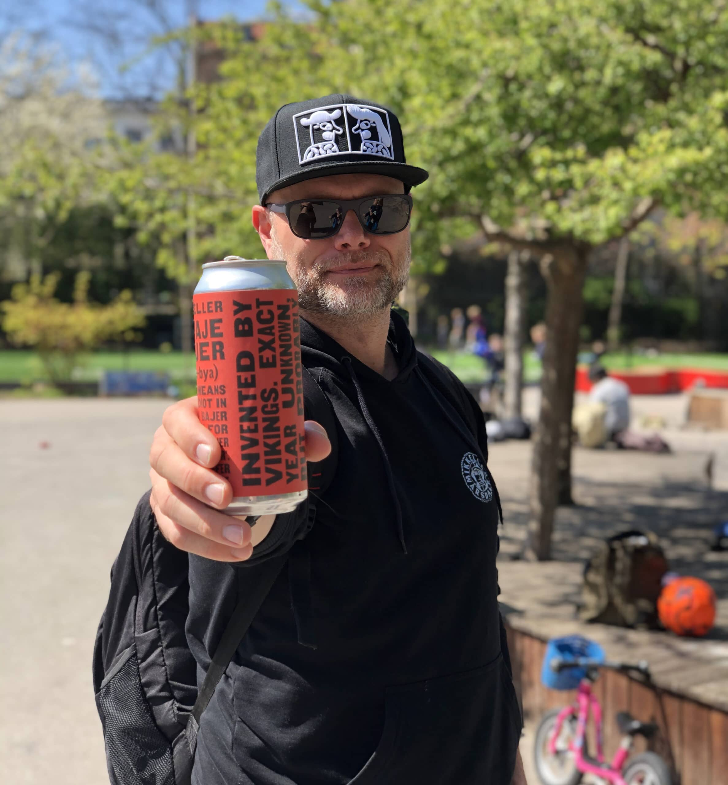

About Beerwalks
BeerWalks are guided beer walks, lectures on beer and beer tastings.
All with stories and world-class beer tasting.
100% outdoors - 100% Cozy!
Do as more than 2,500 BeerWalkers, go for a walk with us in Copenhagen or on Bornholm and soon in the
Faroe Islands - "it can do anything"!
"It's genuinely nice to see people gather around something as simple as drinking some beer and going for a walk. Mikkeller and BeerWalks started together, as a result of corona and a long-lasting beer friendship alongside all sorts of events across the country's bars. Here at Mikkeller, we greatly appreciate the fact that BeerWalks puts words to both beer, the beer industry and Copenhagen as the beer capital in many ways. Both contemporary and historical. It's genuinely nice to see people gather around something as simple as drinking some beer and going for a walk. It's something we all love, but here BeerWalks manages to create the perfect setting with great stories as a bonus. We look forward to more stories, talks and new beers in the future."

Idea man & passionate BeerWalker
BeerWalks is an idea that emerged during the first national shutdown in March 2020 due to Covid-19. Christoffer Hundahl Hansen decided to explore Copenhagen by taking walks under the city lights - while enjoying cold craft beers from Mikkeller and the Bornholm breweries. He invited friends on these very special evening winter walks, while telling stories about the area, the breweries and the beers, and the feedback was: "This is cool, relaxed and more fun than the Covid-19 sofa!". Therefore, Christoffer and his team are proud to present BeerWalks in Copenhagen, on Bornholm and the Faroe Islands in collaboration with the breweries, Mikkeller, Amager Bryghus, ÅBEN, OY Brewing, Penyllan Small Batch Bornholm, Beerhere and Svaneke Bryghus.